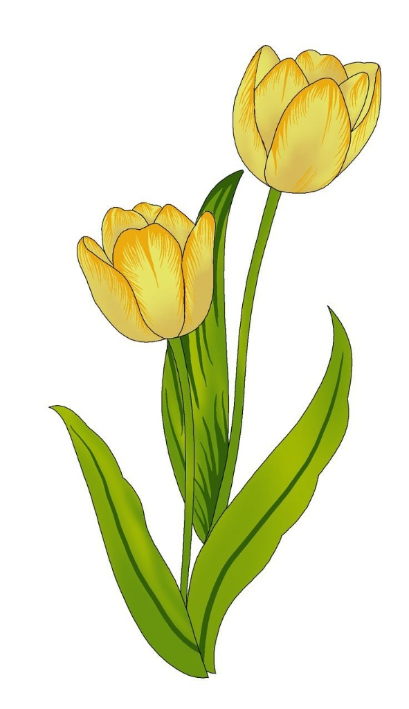

💛 Feliz inicio de primavera 💛
Ahora sé lo importante y valioso que el inicio de primavera es para ti y si es valioso para ti, lo haré valioso para mí
Yo sé que no te mandé flores amarillas pero lo intenté compensar a mi manera
